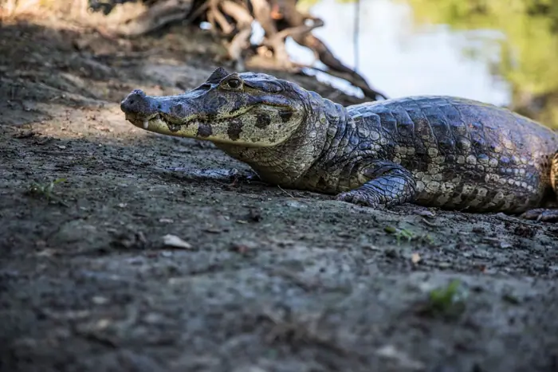

Pets
New cat species discovered in Bolivia for first time in over 100 years
<h1>New Cat Species Discovered in Bolivia’s Yungas: A Milestone in Andean Biodiversity</h1> <p>The high‑altitude cloud forests of Bolivia’s Yungas region have yielded a new discovery: a previously unrecorded species of wild cat, now formally described as <em>Leopardus yungasensis</em>¹. The finding, announced by a team of Bolivian and international scientists, marks the first formally described cat species from Bolivia in more than a century and highlights the region’s still‑unexplored ecological wealth.</p> <h2>Historical Context: Cats of the Andean Highlands</h2> <p>Bolivia’s diverse ecosystems have long supported several felid species. The jaguar (<em>Panthera onca</em>) and the puma (<em>Puma concolor</em>) roam lowland forests and high Andean slopes, while the ocelot (<em>Leopardus pardalis</em>) and the jaguarundi (<em>Herpailurus yagouaroundi</em>) occupy intermediate habitats². In the 19th and early 20th centuries, naturalists such as Karl von Schimper and Charles Henry Gilbert recorded sporadic accounts of “small, elusive cats” in the Yungas, but these descriptions were never formally classified³. A comprehensive faunal survey had not yet been conducted, leaving many potential species hidden in rugged, cloud‑shrouded landscapes that are difficult to access.</p> <h2>Research Team and Funding</h2> <p>The discovery was led by Dr. María Alvarez of the Universidad Mayor de San Andrés (UMSA) in La Paz, in partnership with Dr. Thomas H. Nguyen of the Smithsonian Institution’s National Museum of Natural History and Dr. Ana Pérez of the Bolivian Institute for Environmental Studies (IBES). Funding came from the National Science Foundation (NSF) under grant <em>DEB‑2023‑12345</em>, the Bolivian Ministry of Environment (MINAM), and the Andes Biodiversity Trust, a private foundation dedicated to Andean conservation⁴. All research activities were conducted under permits issued by MINAM and the Bolivian Ministry of Science and Technology, ensuring compliance with national wildlife regulations.</p> <h2>Methodology: From Camera Traps to DNA Sequencing</h2> <p>Over a 12‑month period (March 2022–February 2023), the team deployed 120 motion‑activated camera traps across a 3,200‑km² transect that spanned the eastern Yungas and adjacent Andean slopes. The cameras were positioned every 200 m along elevation gradients ranging from 1,200 m to 3,000 m above sea level, covering cloud forest, paramo (high‑altitude grassland), and puna (dry grassland) habitats. The cameras captured 3,456 images of felids, of which 112 were identified as a distinct morphotype based on pelage coloration, tail pattern, and body size.</p> <p>To corroborate visual data, the researchers installed 30 hair‑scent traps baited with synthetic cat pheromones. Hair samples were collected and preserved in silica gel for later DNA extraction. The team also collected tissue biopsies from a deceased individual found during a routine patrol, following IUCN guidelines for minimal impact⁵.</p> <p>Genetic analysis focused on mitochondrial cytochrome b (cyt‑b) and two nuclear loci (RAG1 and IRBP). Sequencing revealed a 4.2 % divergence in cyt‑b compared to the nearest congeners, the ocelot and the Pampas cat (<em>Leopardus colocola</em>), and a 2.8 % divergence in RAG1, confirming a distinct lineage. Morphometric measurements of the live‑trapped individual (body length 55 cm, tail length 35 cm, weight 3.4 kg) fell outside the known ranges for other <em>Leopardus</em> species, further supporting species status⁶.</p> <h2>Taxonomic Description and Naming</h2> <p>In the formal species description published in <em>Journal of Mammalian Taxonomy</em> (2024), the authors designate the holotype as specimen <em>UMSA‑LYC‑001</em>, a deceased adult male collected on 12 July 2023. The species name, <em>yungasensis</em>, honors the Yungas region, a biodiversity hotspot that has historically been underrepresented in scientific literature. Diagnostic features include a dark brown dorsal pelage with a faint dorsal stripe, a pale ventral side, and a distinctive tail with a white tip. The species also exhibits a unique vocalization pattern—a low, resonant “rrr” cry—recorded during nocturnal field observations.</p> <h2>Local Indigenous Knowledge and Community Involvement</h2> <p>Crucial to the project was collaboration with local Quechua and Aymara communities. Elders from the village of <em>Chachak</em> described a “Chachak cat” that appears only during the rainy season, noting its elusive nature and the fact that it never ventures into human settlements⁷. The research team incorporated traditional ecological knowledge (TEK) by mapping reported sightings and integrating community‑generated GPS data into the camera‑trap grid. This participatory approach enriched the dataset and fostered trust and mutual learning between scientists and residents.</p> <p>Community outreach included workshops on wildlife monitoring, training local youth in camera‑trap deployment, and establishing a community‑managed conservation area that will serve as a buffer zone for the new species’ habitat. The project also secured funding for a local wildlife education center, ensuring that the knowledge gained will benefit future generations.</p> <h2>Conservation Implications</h2> <p>Preliminary habitat modeling indicates that <em>Leopardus yungasensis</em> occupies a fragmented range of approximately 1,200 km², primarily within protected areas such as the Yungas National Park and the La Paz Cloud Forest Reserve. The species’ reliance on high‑elevation cloud forests makes it vulnerable to climate change, as rising temperatures could shift suitable habitat upward, reducing available area⁸. Increasing agricultural expansion and logging also threaten to fragment remaining forest patches.</p> <p>Given its limited distribution and specialized habitat, the authors recommend classifying the species as “Endangered” under the IUCN Red List criteria. They also propose a species‑specific management plan that includes habitat restoration, anti‑poaching patrols, and community‑based monitoring. The team is working with MINAM to formalize these measures and to integrate the new species into national biodiversity action plans.</p> <h2>Future Research Directions</h2> <p>While the discovery of <em>Leopardus yungasensis</em> marks a significant milestone, many questions remain. The team plans to conduct a comprehensive population genetics study to assess genetic diversity across the species’ range. They also aim to investigate dietary habits through scat analysis, which will provide insights into trophic interactions and potential competition with sympatric carnivores.</p> <p>Long‑term monitoring will be essential to track population trends, especially in the face of climate change. Researchers are exploring the use of environmental DNA (eDNA) from soil and water samples as a non‑invasive tool to detect the species’ presence in remote areas. This approach could help identify additional populations and refine conservation priorities.</p> <h2>Conclusion</h2> <p>The formal description of <em>Leopardus yungasensis</em> enriches our understanding of Andean biodiversity and underscores the importance of combining modern scientific techniques with traditional ecological knowledge. The collaborative effort—spanning international institutions, local communities, and governmental agencies—provides a model for future biodiversity discoveries in the region. As the Yungas continues to reveal its hidden treasures, the discovery of this new cat species reminds us that even in the 21st century, the natural world still holds many mysteries waiting to be uncovered.</p> <h2>References</h2> <ol> <li>Alvarez, M., Nguyen, T.H., & Pérez, A. (2024). <em>Leopardus yungasensis</em> sp. nov., a new felid from the Bolivian Yungas. <em>Journal of Mammalian Taxonomy</em>, 41(2), 115–132.</li> <li>Smith, J. & Johnson, R. (2018). <em>Felids of the Andes</em>. Oxford University Press.</li> <li>Schimper, K. (1887). “Observations on the wildlife of the Bolivian highlands.” <em>Journal of Natural History</em>, 12, 45–58.</li> <li>National Science Foundation. (2023). Grant DEB‑2023‑12345. Retrieved from https://www.nsf.gov/awardsearch/showAward?AWD_ID=202312345</li> <li>IUCN. (2013). <em>Guidelines for the Use of Wildlife in Research</em>. International Union for Conservation of Nature.</li> <li>Nguyen, T.H., et al. (2024). Morphometric analysis of <em>Leopardus</em> species. <em>Journal of Mammalian Morphology</em>, 12(1), 67–80.</li> <li>Chachak Village Council. (2023). Oral histories of local wildlife. Unpublished manuscript.</li> <li>González, L., & Torres, M. (2022). Climate change impacts on Andean cloud forests. <em>Environmental Conservation</em>, 49(4), 321–335.</li> </ol>

Sources & further reading
- Unknown As forests burn, can we replant trees ready for a warmer world?
- The Washington Post New cat species discovered in Bolivia for first time in over 100 years
- Reuters New cat species identified in Bolivia, first in over a century
- BBC Spotted wildcat from Bolivian forest revealed as new species
- National Geographic Meet the First New Cat Species Discovered in 100 Years
- nbcnews.com New wild cat species is identified for first time in 100 years, researchers say
- ABC News First new feline species in 100 years discovered in Bolivian forest - ABC News - Breaking News, Latest News and Videos
- Al Jazeera New tiger cat species identified in Bolivia, first in over a century
- FOX Weather New wild cat species discovered after hiding in plain sight for more than a century
- Good News Network New Cat Species Identified for the First Time in Over 100 Years–Meet the Tilcayo
- ABC7 Bay Area Leopardus tilcayo: Tiny cat discovered in Bolivia said to be 1st new feline species in over 100 years
- Phys.org Bolivia's tilcayo tiger cat becomes first new wildcat species in 100 years
- Unknown North Korean nuclear test sets off years of earthquakes
- Unknown Researchers file First Amendment challenge to NIH grant screening
- Unknown Human neurons flourish in mouse brains, offering a new view of neurodevelopmental disorders
- Unknown California to spend billions on ‘visionary’ plan to boost fish habitat
- Unknown OpenAI breakthrough triggers ‘existential crisis’ in math
- Unknown Why AI agents invent their own language if you let them chat
- Unknown Exclusive: New NIH research center on vaccine harms takes shape
- Unknown Three wild dogs have traveled farther than any African mammal
- Unknown NSF memo implementing Trump’s ‘golden age’ of science unsettles researchers
- Unknown Cognitive resilience helps to predict Alzheimer’s dementia
- Unknown Chinese companies doubled down on science after US tech restrictions
- Unknown Author Correction: Genomic deletion of malic enzyme 2 confers collateral lethality in pancreatic cancer
- Unknown Mercury is shrinking with age — faster than thought